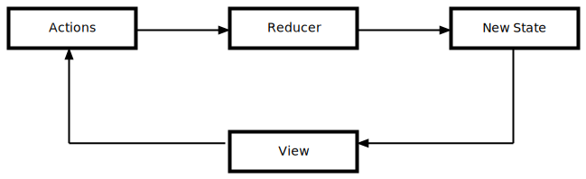

Derpymon
Building reactive VR experiences with Dojo 2 and A-Frame
Hello!
Paul Shannon

- Sr Engineer @ SitePen
- Co-maintainer of Intern
- SitePen Podcast
- Phoenix TypeScript
- devpaul
- @developerPaul
A-Frame
A-Frame is a declarative framework for building VR on the web.
A-Frame is an Entity - Component - System framework for THREE.js with WebVR support
Entity
An entity is a basic object represented by an <a-entity> tag
Component
A component is a reusable chunk of code added to an entity that represents behavior or appearance
System
A global scope for services and data shared with a component of the same name
How does A-Frame work?
A-Frame uses custom elements that allow it to create VR scenes
- All VR objects are contained in an <a-scene> element
- A-Frame creates a <canvas> for rendering
- Entities are read as HTML and rendered to the canvas
- Entities are watched for changes

Dojo 2
Dojo 2 is a reactive framework that reacts to changes in state to propagate and render change to the view
Reactive Architecture
Dojo Stores
Dojo doesn't lock us into a particular pattern as long as property changes can be detected
Building Derpymon
Architectural Roles
A-Frame and Dojo 2 both rely on the DOM and maintain state.
How do we make them work together?
Dojo's role is to render and modify application state
- Stores define the state of the application
- Widgets render DOM elements to the page
A-Frame's role is to transform and render 3D state
- Custom Elements to declare the structure of an environment.
- Components are used to modify the underlying THREE.js model
DEMO TIME!
Take-Aways
- A-Frame Components are properties on Custom Elements
- Custom Elements should maintain their own internal state
- Rendering can reset this internal state
Always identify when state should be persisted in the Application layer vs Render layer
- Can my widgets reproduce state?
- Should I monitor state of this element and share it with Dojo?